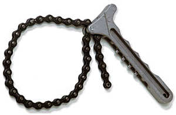
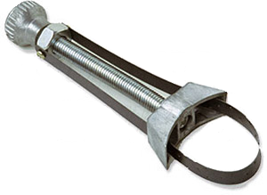
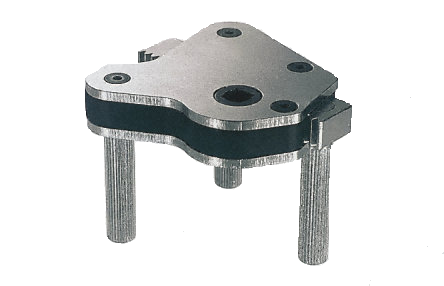
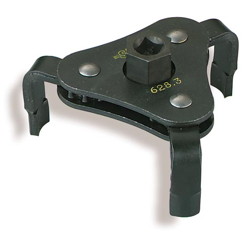

Clé de filtre
| La clé de filtre à huile permet de desserrer d’environ ¼ de tour un filtre à huile de voiture, lors de la vidange de celle-ci. A remarquer que le serrage doit se faire manuellement donc sans utiliser la clé, sinon il y a risque d'écraser le joint d'où risque de fuite. |
Il existe une multitude de clé de filtre à huile dont voici les principaux :
 |
 |
 |
 |
| Clé à chaîne | Clé à sangle | Clé à crémaillère | Clé à griffes |